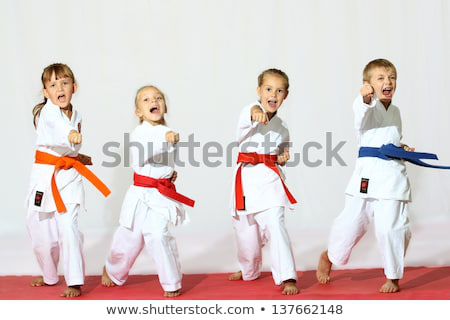

De leukste hobby's voor de jeugd.
Geef je kind: meer zelfvertrouwen, een betere conditie, doorzettingsvermogen, sociale vaardigheden en een hele boel plezier!
Je bent opzoek naar een hobby voor je zoon of dochter, maar welke hobby's zijn nou het meest geschikt voor uw zoon of dochter? Er zijn veel positieve kanten wanneer uw kind een hobby heeft.Positieve effecten van hobby's op kinderen
- Het zelfvertrouwen neemt toe
- Interactie met andere kinderen
- Leert dicipline
- Fysieke gezondheid
- Plezier
 Straks is jouw kleine nog the next karate-kid! Bijvoorbeeld op voetbal leer je goed samen te werken, sportief je te gedragen en het verbetert je conditie. Is uw kind meer verlegen? Dan zou uw kind meer gebaadt zijn met een hobby die werkt aan het zelfvertrouwen zoals vechtsporten. Sporten zoals: judo, taekwondo, karate of jiu jitsu. Bij jiu jitsu bijvoorbeeld leert men zich goed te verdedigen, je grenzen te verdedigen en hoe je kalm kan blijven in moeilijke situaties. Kijk daarom goed naar het karakter van uw kind en probeer verschillende dingen uit. Meestal is er wel een leuke actie waarbij kinderen een dagje mogen meedoen om te ontdekken of de hobby bij ze past. Leg uw kind ook niets op, hou in gedachten dat uw kind niet iets moet gaan doen wat u leuk lijkt of vind, maar wat daadwerkelijk leuk is voor het kind. Probeer te observeren in plaats van te leiden. En blijkt het toch niet leuk? Dan zijn er nog genoeg andere hobby's waaruit je kan kiezen.
Het belangrijkste is natuurlijk dat uw kind plezier heeft in het ontdekken van een hobby. Mocht de ene hobby niet aanslaan dan zijn er nog een tal van hobby's om te proberen.